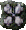

Bardic Wonders
This mod focuses on adding bard-centric content. It is primarily designed for Baldur’s Gate, but the kits and gameplay additions are compatible with Icewind Dale: Enhanced Edition.
Mod additions include new kits, special abilities, items, spells and mechanics changes. The bard class description assumes every mod component is included, but each may be chosen separately as desired.
Components
New and Revised Kits
The mod includes a variety of kits, both new and modifications to the original game kits. Each kit may be installed independently.
New Items
A collection of bard-centric items are added to Baldur's Gate I and II. In Baldur's Gate I, they are found scattered throughout the game. In Baldur's Gate II, they may be bought from a vendor in Trademeet.
Armored Casting
This component tweaks all armor in the game of studded leather level and below to no longer disable spellcasting when worn by bards, allowing the class to take full advantage of their ability to wear said armors. For maximum compatibility, install this after mods that add new armors or modify existing armors.
Revised Bard Song Mechanics
For those who prefer their bards to take a more proactive role in combat while still wanting the benefits of their bard song, this component changes the core mechanic of singing for the vanilla bard, its kits, and all kits included within this mod. Rather than a modal action, the bard song button instead functions as a reusable spell that applies the effects of the bard’s song as an aura for 3 rounds + 1 round per 3 levels. There is a cooldown of five rounds once the song ends before the bard may sing again.
Revised Item Restrictions
This component allows the bard to equip and use items restricted to mages. It also gives them the ability to use priest scrolls.
Bard Song Overhead Visual Effect
This component adds a visual effect above the bard while singing.
3e Alignment
This component changes the bard's alignment restrictions to match 3rd edition, allowing them to choose any non-lawful alignment.
BARD: The Bard is a rogue, but they are very different from the Thief. The Bard's strength is their pleasant and charming personality. With it and their wits, they make their way through the world. A Bard is a talented musician and a walking storehouse of gossip, tall tales, and lore; they learn a little bit about everything that crosses their path and are a jack-of-all-trades but master of none. While many Bards are scoundrels, their stories and songs are welcome almost everywhere.
CLASS FEATURES:
– May not wear armor heavier than chain mail. (Spells may be cast while wearing up to studded leather armor.)
– May not equip shields larger than bucklers.
– May only become Proficient (one slot) in any weapon class.
– May only become Proficient (one slot) in any fighting style.
– Thieving abilities: Pick Pockets.
– Increased Lore score.
– May cast arcane spells starting at 2nd level.
– May use Bard Song ability. The Bard's Song may be used an unlimited number of times, and lasts for 6 rounds + 1 round per 5 levels gained. The Bard Song has a cooldown of 1 turn before it may be used again.
– May use Bardic Inspirations. Inspirations provide various benefits that persist so long as they are within visual range of the bard.
– Alignment restricted to any non-lawful. Bards are wanderers, guided by whim and intuition.
– Hit Die: d6
Inspirations
New Spells
High Level Abilities
Inspirations
New Spells
High Level Abilities
Inspire Courage
Allies gain +1 to hit rolls and increased morale. Bonuses to hit increase to +2 at 8th level, +3 at 15th level and +4 at 22nd level.
Inspire Competence
Allies gain +10 to Lore and Thieving Skills. Bonuses increase to +20 at 10th level and +30 at 17th level.
Inspire Defense
Allies gain +2 to Armor Class vs. all weapon types. Bonuses increase to +3 at 14th level, +4 at 22nd level.
Inspire Regeneration
Allies regenerate for 1 hit point per 2 rounds. Regeneration increases to 2 hit points at 17th level and 3 hit points at 24th level.
Inspire Toughness
Allies gain +2 to all Saving Throws. Bonuses increase to +3 at 21st level and +4 at 30th level.
Inspire Alacrity
Allies gain +1 to casting speed. Bonuses increases to +2 to casting speed at 40th level.
Shadow Magic
If Shadow Magic and Bardic Inspirations are both installed, the Nightsinger bard kit receives their own set of Dark Inspirations.
Inspire Wrath
Allies gain a +2 bonus to minimum damage rolls, but a -1 penalty to Armor Class. Bonuses and penalties increase to +3/-1 at 8th level, +4/-2 at 15th level and +5/-2 at 22nd level.
Inspire Ambition
Allies gain +1 to Casting Level and +10% to Spell Duration. Bonuses increase to +2 and +20% respectively at 10th level and +3 and +30% respectively at 17th level.
Inspire Preservation
Allies gain +3% Magic Resistance. Bonuses increase to +7% at 11th level, +11% at 16th level and +15% at 21st level.
Inspire Voracity
Allies' attacks drain targets for 1 hit point. Drain amount increases to 2 hit points at 18th level and 3 hit points at 26th level.
Inspire Audacity
Allies gain +1 to Backstab and Critical Hit Modifiers. Bonuses increase to +2 at 36th level.
Inspire Dominance
Allies gain a +15% bonus to damage dealt from all sources. Bonuses increase to +25% at 40th level.
The bard may learn and memorize a selection of spells exclusive to their class. Spells may be chosen in character creation or learned through scrolls added to the games. Click below to return to the class description.
Balagarn's Iron Horn
(Alteration)
Level: 1
Range: 0
Duration: Instant
Casting Time: 1
Area of Effect: 10-ft. cone with 120-deg. arc
Saving Throw: Neg.
With this spell, the bard raises both hands and creates a powerful, resonant vibration which shakes all creatures in a 10-ft. cone from their palms, dealing 1d4 crushing + 1 magical damage per level (maximum of 5 damage) to all targets and knocking them off their feet for one round if a Saving Throw vs. Breath is failed. From 7th level, targets must save at a -1 penalty, increasing to -2 at 13th level and -3 at 18th level.
Courage
(Abjuration)
Level: 1
Range: Touch
Duration: 1 round + 1 round per level
Casting Time: 1
Area of Effect: 1 creature
Saving Throw: None
Using this spell, the bard bolsters the courage of the targeted ally, granting them a non-cumulative +1 bonus to THAC0 and damage. The target is also purged of all fear and morale failure effects, and is immune to such effects for the duration.
Mischance
(Enchantment/Charm)
Level: 1
Range: Visual range of the caster
Duration: 4 rounds
Casting Time: 1
Area of Effect: 1 person
Saving Throw: None
The bard afflicts an unfortunate target with a malicious hex, causing all sorts of misfortune to befall them. For the next four rounds, the target's Saving Throws and morale are reduced by 2 points, they cannot critically hit on any roll, and their critical miss modifier is increased by one (a roll of 2, for example, would result in a critical miss). From 16th level, the critical miss modifier is further increased to two.
Cleansing Aria
(Conjuration)
Level: 2
Range: Visual range of the caster
Duration: Instant
Casting Time: 1
Area of Effect: Special
Saving Throw: None
The bard chants a magical tune to soothe the target, restoring their hit points by 1d8 points and curing most ailments or diseases that afflict them, as well as the effects of blindness, deafness, and feeblemind. From 9th and 13th levels, an additional target may be chosen respectively—the same target may also be chosen multiple times for additional healing.
Heroism
(Enchantment/Charm)
Level: 2
Range: Visual range of the caster
Duration: 2 hours
Casting Time: 2
Area of Effect: Special
Saving Throw: None
For the next two hours, the targeted creature is blessed with an enchantment which increases their competence, granting them a +10% bonus to their Hit Points, and setting their THAC0 to 90% of their base.
Sound Burst
(Evocation)
Level: 2
Range: Visual range of the caster
Duration: 2 hours
Casting Time: 2
Area of Effect: Special
Saving Throw: Neg.
An ear-splitting sound erupts from a targeted location of the bard's choosing, dealing 1d4 crushing and 2d4 magic damage to all creatures within a 10-ft. radius and stunning them for two rounds on a failed Saving Throw vs. Death. Due to the special nature of this spell, the sound emitted is natural rather than magical and is thus not affected by Magic Resistance.
Crushing Despair
(Enchantment/Charm)
Level: 3
Range: Visual range of the caster
Duration: 1 turn
Casting Time: 2
Area of Effect: 25-ft. cone with 60-deg. arc
Saving Throw: None
An invisible cone of energy induces great despair and sadness upon unfortunate targets within the area of effect, penalizing their THAC0, damage, Saving Throws, Morale and Armor Class by two points for the next turn. This spell only affects the caster's enemies.
Battleluck
(Enchantment/Charm)
Level: 3
Range: Visual range of the caster
Duration: 1 hour
Casting Time: 2
Area of Effect: 1 person
Saving Throw: None
The targeted creature is blessed with fortune in battle. For the next hour, their attacks will never critically miss, even on a roll of 1, and their critical hit modifier is increased by 1. From 14th level onwards, their critical hit modifier is further increased to 2.
Free Action
(Abjuration)
Level: 4
Sphere: Charm
Range: Touch
Duration: 1 turn + 1 round/level
Casting Time: 5
Area of Effect: 1 creature
Saving Throw: None
While under the effects of this spell, the recipient becomes immune to anything that affects <PRO_HISHER> movement. This includes the effects of Web, Hold Person, Grease, and Entangle.
Neutralize Poison
(Necromancy)
Level: 4
Sphere: Healing
Range: Touch
Duration: Instant
Casting Time: 1
Area of Effect: 1 creature
Saving Throw: None
This spell removes all toxins from the body, both natural and magical in nature. When this spell is cast upon a poisoned individual, it immediately neutralizes any poison and restores 10 lost Hit Points. This spell will also cure any diseases that the target might be suffering from, as well as blindness and deafness.
Heroic Cry
(Enchantment/Charm)
Level: 4
Range: Visual range of the caster
Duration: 1 turn
Casting Time: 2
Area of Effect: 15-ft. radius
Saving Throw: Neg.
The bard lets out a powerful shout, granting them a +2 bonus to THAC0 and damage. All enemies within a 15-ft. radius of the bard must also make a Saving Throw vs. Death at -2 or suffer a -2 penalty to Armor Class and a -4 penalty to morale rolls.
Chaotic Commands
(Enchantment/Charm)
Level: 5
Sphere: Chaos
Range: Visual range of the caster
Duration: 1 turn/level
Casting Time: 3
Area of Effect: 1 creature
Saving Throw: None
Chaotic Commands renders a creature immune to magical commands. Suggestion, Charm, Domination, Command, Sleep, Maze, and Confusion are all spells that fit into this category. This spell also protects the target from Psionic Blast. This spell affects only 1 creature and lasts for the duration or until dispelled.
Greater Heroism
(Enchantment/Charm)
Level: 5
Range: Visual range of the caster
Duration: 2 hours
Casting Time: 2
Area of Effect: 1 creature
Saving Throw: None
This is a more powerful version of the Heroism spell. For the next two hours, the targeted creature is blessed with an enchantment which increases their competence, granting them a +25% bonus to their Hit Points, setting their THAC0 to 60% of their base, and gaining a +4 bonus to all their Saving Throws. This spell and Heroism are non-cumulative with each other, and the more recently applied spell will remove the effects of the other.
Dirge
(Evocation)
Level: 6
Range: 30 ft.
Duration: 8 rounds
Casting Time: 8
Area of Effect: 10-ft. radius
Saving Throw: None
The bard sings a powerful song which draws upon the energies of death and destruction. For the next eight rounds, all enemies within the affected area have their maximum Hit Points and damage dealt from all sources reduced by 20%, and their movement rate is halved. If a creature leaves the area of effect, their attributes are restored.
 Song of Freedom
Song of Freedom
Upon using this ability, the bard removes all charm, confusion, fear, feeblemind, hold, sleep, berserk, stun effects from allies in a 25-ft. radius around them and provides immunity to such effects for 1 turn.
Removes effects of Song of Heroism and Legionnaire's March.
This ability may be selected three times.
Legionnaire's March
Upon using this ability, the bard empowers all allies in a 25-ft. radius around them, setting their base THAC0 to 0 and base attacks per round to the equal of a fighter's of the same level, and +4 to damage for 1 turn.
Removes effects of Song of Freedom and Song of Heroism.
This ability may be selected three times.
Song of Heroism
Upon using this ability, the bard grants temporary hit points equal to +4 per level of the bard and a +6 bonus to Armor Class and Saving Throws for 1 turn to all allies in a 25-ft. radius around them.
Removes effects of Song of Heroism and Legionnaire's March.
This ability may be selected three times.
Hymn of Requiem
Upon using this ability, the bard instantly deals 60 unmitigated magic damage to enemies and heals 60 hit points to allies within a 25-ft. range of the bard. This song ignores all spell protections and magic resistance.
This ability may be selected once.
 Prestissimo
Prestissimo
The bard chants incantations with the ease and fluidity of song or verse. Upon learning this permanent ability, the bard's casting speed is permanently increased by 1.
 Unchained Voice
Unchained Voice
The bard's mastery of their voice is without peer and cannot be stifled by any means. Upon learning this permanent ability, the bard gains a +1 bonus to casting speed and immunity to silence effects.
Requires: Prestissimo
Resonating Weapon
The bard imbues the weapons of themselves and all allies with in a 20-ft. radius of them with the power of sound. For the next 5 rounds, all attacks made by affected allies cause all enemies within 10-ft. of the initial target to emanate a harmful wave of sound in a 5-ft. radius, dealing 2d6 magic damage and having a 20% chance to stun them for 1 round on a failed Saving Throw vs. Death at -5. Multiple sound waves that overlap may affect the same target, applying their effects consecutively.
Lingering Song
With this permanent skill, the effects of the bard's song remain on all targets for an additional 4 rounds after they stop singing.
Battle Caster
With this permanent skill, the bard's extensive experience has permanently allowed them to cast spells while wearing any armor. (Note: The Skald receives this for free at level 1.)
Prerequisite: Not Dancer or Kapellmeister
 Martial Prowess
Martial Prowess
Equal parts warrior and poet, the skald's training has given them combat experience near-equivalent to that of a fighter, permanently granting them one bonus attack per round and +100 exceptional bonus to Strength.
Prerequisite: Skald only
 Enhanced Bard Song
Enhanced Bard Song
 Use Any Item
Use Any Item
 Scribe Scrolls (Rogue)
Scribe Scrolls (Rogue)
 Alchemy (Rogue)
Alchemy (Rogue)
BLADE: Blades are master artisans with bladed weapons. Everyone has seen a Blade in action at fairs and carnivals. They are the knife throwers who pop balloons while blindfolded and swallow slender sabers such as those used by lawless pirates on the high seas. Blades also perform amazing displays of weapon skill and control as they flash various weapons all about their bodies with deadly precision.
Advantages:
– Blade Dancer: The blade uses their Charisma modifier, if higher, for melee bonuses to hit instead of Strength.
– May achieve Grand Mastery (five slots) in any bladed weapon.
– Gains Mastery in Two-Weapon Style at 1st level.
– Instead of a regular Bard Song, the blade may perform a Weapons Display, performing a deadly dance with their weapons to intimidate their foes while inspiring their allies. This reduces the morale of all nearby foes by 2 while granting a +1 bonus to hit to all allies within visual range. The display has no effect on non-sentient creatures such as golems or undead.
– May use the Offensive Spin and Defensive Spin abilities once per day. Gains one use each at level 1 and an additional use each every 4 levels thereafter. Using either spin will remove the effects of the other, if ongoing.
OFFENSIVE SPIN: The blade takes on a fighting maneuver which is both fearsome and lethal. For the next four rounds, the blade receives movement speed and a bonus attack per round as a haste spell, while additionally dealing maximum damage for the duration. However, the blade cannot cast spells during this time. After the end of the duration, the blade is briefly winded and may not attack or cast spells for three rounds.
DEFENSIVE SPIN: The blade whirls their weapon rapidly around their body in a defensive stance for up to four rounds. During this period, the blade cannot move, attack, or cast spells, but receives a +1 bonus to Armor Class per level up to a maximum of 10. The blade also deflects projectiles while spinning, becoming immune to most missile attacks. If the blade is struck by a melee attack during the spin, they negate the damage and return 1d10 slashing damage per 5 levels to the attacker and disarms them, rendering them unable to attack for three rounds and ending the spin.
Disadvantages:
– Weapons Display does not improve with level.
– Only has one half the normal Lore value.
– Only has one half the normal Pick Pockets skill.
High Level Abilities
 Improved Offensive Spin
Improved Offensive Spin
The blade has achieved mastery of the Offensive Spin technique and will no longer become winded after the duration ends. In addition, they may use an Improved version of the ability once per day, granting them an increased critical hit modifier of 5 and doubled attacks per round for the duration instead of only one.
 Improved Defensive Spin
Improved Defensive Spin
The blade has achieved mastery of the Defensive Spin technique and may now move while using the ability, albeit at a 50% reduced movement rate. In addition, they may use an improved version of the ability once per day, in which they throw blades at all enemies within a 20-ft. radius dealing 1d6 damage once per second for a total of twenty-four times over the duration.
Enhanced Bard Sgong
High Level Abilities
 Improved Offensive Spin
Improved Offensive Spin
The blade has achieved mastery of the Offensive Spin technique and will no longer become winded after the duration ends. In addition, they may use an Improved version of the ability once per day, granting them an increased critical hit modifier of 5 and doubled attacks per round for the duration instead of only one.
 Improved Defensive Spin
Improved Defensive Spin
The blade has achieved mastery of the Defensive Spin technique and may now move while using the ability, albeit at a 50% reduced movement rate. In addition, they may use an improved version of the ability once per day, in which they throw blades at all enemies within a 20-ft. radius dealing 1d6 damage once per second for a total of twenty-four times over the duration.
Enhanced Bard Sgong
JESTER: This Bard is well versed in the arts of ridicule and hilarity, and uses their abilities to distract and confuse their enemies, cavorting madly during combat. Do not mistake them for a true fool, however, as they can also be quite deadly.
Advantages:
– The Jester's Song, "Piercing Mockery", does not help allies. Instead, every opponent within 30 feet must save once per round to avoid falling under its effects:
1st level: Enemies receive a -2 penalty to Armor Class and a 25% chance to miscast their spells.
10th level: Enemies receive a -2 penalty to Armor Class, a 40% chance to miscast spells, and an increased critical miss modifier of 1.
15th level: Enemies receive a -4 penalty to Armor Class, a 55% chance to miscast spells, and an increased critical miss modifier of 1.
20th level: Enemies receive a -6 penalty to Armor Class, a 55% chance to miscast spells, and an increased critical miss modifier of 2.
– May use Heckle once per level.
HECKLE: The Jester uses every trick imaginable to taunt a single target, increasing their critical miss modifier by 4 and inflicting a 75% chance for spell failure for the next round. The target must also make a Saving vs. Breath (-1 to modifier per 6 levels) or go berserk for 3 rounds.
– 6th level May use Mad Ramble once per day. Gains an additional use at 10th and 14th level.
MAD RAMBLE: The Jester forces all enemies within a 15-ft. radius to make a Save vs. Spell with a -4 penalty or become confused for 5 rounds + 1 round/6 levels, as per a Chaos spell. Unlike Chaos, this ability is not affected by Magic Resistance.
Disadvantages:
– May not use regular Bard Song.
High Level Abilities
Enhanced Bard Song
"The Fool's Journey"
This powerful song greatly enhances the Jester's influence over their foes. The Fool's Journey reduces all enemies' Armor Class by 10, induces a 70% chance to miscast spells, and an increased critical miss modifier of 5. Enemies are also unable to critically hit while under the effects. Additionally, while the Jester is singing, they gain a bonus of 10 to Armor Class, which is doubled against ranged attacks.
This ability replaces the current Bard Song.
High Level Abilities
Enhanced Bard Song
"The Fool's Journey"
This powerful song greatly enhances the Jester's influence over their foes. The Fool's Journey reduces all enemies' Armor Class by 10, induces a 70% chance to miscast spells, and an increased critical miss modifier of 5. Enemies are also unable to critically hit while under the effects. Additionally, while the Jester is singing, they gain a bonus of 10 to Armor Class, which is doubled against ranged attacks.
This ability replaces the current Bard Song.
SKALD: This nordic Bard is also a warrior of great strength, skill, and virtue; their songs are inspiring sagas of battle and valor, and the Skald devotes their life to those pursuits.
Advantages:
– May Specialize (two slots) in any weapon.
– May Specialize (two slots) in any fighting style.
– (Armored Casting) Battle Caster: The Skald may cast spells while wearing any armor.
– The Skald's Bard Song, "Battle Song of Valor", empowers their allies' and bolsters their will to battle, granting them combat bonuses.
1st level: +2 bonus to hit rolls, Armor Class and Morale.
10th level: +2 bonus to hit and damage rolls, Armor Class and Morale, +10% to all resistances.
15th level: +3 bonus to hit and damage rolls, Armor Class, +10% to all resistances, immunity to fear.
20th level: +3 bonus to hit and damage rolls, Armor Class, +10% to all resistances, immunity to fear, stun, and confusion.
– 8th level: Combat Casting: The skald is skilled at casting spells in the midst of combat. If there is an enemy within 5-ft. of the skald, they gain an increased casting speed of 2.
– 12th level: Gains Heroic Inspiration.
HEROIC INSPIRATION: When the skald's maximum hit points falls below 50%, all allies (except the skald) within visual range gain an additional +1 bonus to hit, damage and saving throws.
Disadvantages:
– The Skald's spells are cast as though a level lower than a normal Bard of the same level.
– May not Pick Pockets.
High Level Abilities
Enhanced Bard Song
"Warsong of the Undying"
This is a powerful aid to both the Skald and to their allies. The song gives the Skald themselves a 10-point bonus to their Armor Class and a 25% bonus to physical resistances. The song also gives their allies a +5 bonus to hit and damage rolls, Armor Class, +15% to all resistances, immunity to fear, stun, and confusion, and Haste while the song is active.
This ability replaces the current Bard Song.
High Level Abilities
Enhanced Bard Song
"Warsong of the Undying"
This is a powerful aid to both the Skald and to their allies. The song gives the Skald themselves a 10-point bonus to their Armor Class and a 25% bonus to physical resistances. The song also gives their allies a +5 bonus to hit and damage rolls, Armor Class, +15% to all resistances, immunity to fear, stun, and confusion, and Haste while the song is active.
This ability replaces the current Bard Song.
Contrary to popular belief, the trickster god Mask's favor extends past those who walk the path of stealthy arts and trickery. The Abettor is a faithful Maskarran, a deceptive agent of the Lord of Shadows whose gall is tested through tasks that typical bards would balk at due to their dark natures.
Advantages:
– Receives a +5% bonus to Pick Pockets per level.
– Gains a backstab multiplier of x2.
– The Abettor's song, "One's Loss, Another's Gain", provides thieving and stealth bonuses to the party. The song grants +15% to all thieving skills, increasing by 5% per rank and grants the following effects:
3rd level: Party members passively detect traps
6th level: Party members gain Blur (+3 to AC, +1 to all saving throws)
9th level: The singer has a 50% chance to gain Improved Invisibility for one round
12th level: Party members gain Non-Detection
15th level: The singer has a 100% chance to gain Improved Invisibility for one round
– From 10th level onwards, the Abettor passively has a 1% chance upon taking damage to turn invisible for one turn.
– From 12th level onwards, gains one use of Shadowstep.
SHADOWSTEP: The character steps into the Shadow Plane and may move for 7 seconds while others are frozen in time. The caster cannot attack or cast spells while in the Shadow Plane.
– May learn the Assassination high level ability upon reaching 24th level.
DISADVANTAGES:
– Must be of True Neutral, Chaotic Neutral, Neutral Evil or Chaotic Evil alignment.
– Only has one-half normal Lore value.
– May not learn the Magic Flute high level ability.
– May only be proficient in weapons usable by thieves.
credit to Lava del'Vortel for the kit design.
High Level Abilities
Enhanced Bard Song
"Symphony of the Dark Children"
This song is a powerful aid to both the Abettor and to their allies. In addition to all existing effects, the song now provides +70% to all thieving skills, +6 to Luck, +4 to Armor Class (+8 vs. missile weapons) with an additional +2 vs. good-aligned creatures, +4 to all saving throws, immunity to backstab and a 20% chance for all party members to turn invisible for two rounds. The Abettor also has a 5% chance to stop time for one round, but is unable to take any action for the duration.
This ability replaces the current Bard Song.
Embrace the Shadow
Gaining the favor of the Lord of Shadows has its advantages. The Abettor of Mask permanently gains a +1 bonus to Dexterity and Luck and becomes immune to poison and backstabs. Their backstab multiplier is also increased by one point.
 Assassination
Assassination
High Level Abilities
Enhanced Bard Song
"Symphony of the Dark Children"
This song is a powerful aid to both the Abettor and to their allies. In addition to all existing effects, the song now provides +70% to all thieving skills, +6 to Luck, +4 to Armor Class (+8 vs. missile weapons) with an additional +2 vs. good-aligned creatures, +4 to all saving throws, immunity to backstab and a 20% chance for all party members to turn invisible for two rounds. The Abettor also has a 5% chance to stop time for one round, but is unable to take any action for the duration.
This ability replaces the current Bard Song.
Embrace the Shadow
Gaining the favor of the Lord of Shadows has its advantages. The Abettor of Mask permanently gains a +1 bonus to Dexterity and Luck and becomes immune to poison and backstabs. Their backstab multiplier is also increased by one point.
 Assassination
Assassination
DANCER: The dancer is an entertainer, an acrobat and a surprisingly dangerous combatant when drawn to battle, emphasizing speed and agility to confuse and unnerve their opponents while inspiring allies to fight with increased confidence.
ADVANTAGES:
– May place 3 slots in Two-Weapon Style.
– +2 bonus to base Armor Class at 1st level. Gains an additional +1 bonus at 10th level and every 10 levels thereafter.
– +1 bonus to Armor Class vs. missile weapons at 1st level. Gains an additional +1 bonus to Armor Class every 5 levels.
– +2 to movement rate.
– The Dancer's Bard Song, "Dance of the Floating Lily", immobilizes the dancer while inspiring their allies, providing immunity to fear and morale failure and grants the following bonuses:
1st level: +1 to hit and damage, +1/2 attack per round, dancer gains +2 to Armor Class
6th level: +2 to hit and damage, +1/2 attack per round, dancer gains +4 to Armor Class
11th level: +3 to hit and damage, +1/2 attack per round, dancer gains +6 to Armor Class
16th level: +4 to hit and damage, +1 attack per round, dancer gains +8 to Armor Class
21st level: +5 to hit and damage, +1 attack per round, dancer gains +10 to Armor Class
– From 4th level onwards, may use the Adrenaline Rush ability once per day. Gains an additional use at 8th and 12th level.
ADRENALINE RUSH: The dancer temporarily gains a huge boost in power for three rounds, gaining +1 to hit and damage for every four levels. Attacks per round are also doubled. However, their Armor Class is reduced by four points and they are unable to use their Bard Song, and after the duration ends, they become winded, suffering a huge penalty to fatigue and inability to use their Bard Song for one turn. From 18th level onwards, the dancer is no longer fatigued after the effect expires.
DISADVANTAGES:
– May not wear any armor.
– May not use shields.
– May memorize one less spell per level.
– Only has one-half normal Lore value.
High Level Abilities
Enhanced Bard Song
"Swift-as-Flowing-Water"
This oriental dance is a powerful aid to both the Dancer and to allies. The song gives the Dancer a +20 bonus to Armor Class as well as the ability to move at a reduced pace. The song also gives allies +8 to hit and damage as well as one extra attack per round and increased movement rate. There is also a 5% chance each round that any affected party member may gain the effects of Adrenaline Rush.
This ability replaces the current Bard Song.
High Level Abilities
Enhanced Bard Song
"Swift-as-Flowing-Water"
This oriental dance is a powerful aid to both the Dancer and to allies. The song gives the Dancer a +20 bonus to Armor Class as well as the ability to move at a reduced pace. The song also gives allies +8 to hit and damage as well as one extra attack per round and increased movement rate. There is also a 5% chance each round that any affected party member may gain the effects of Adrenaline Rush.
This ability replaces the current Bard Song.
DARKBLOOM BARD: Rarely seen in the Realms, Darkbloom Bards are recognized for their skills in using the powers of nature. Unlike druids, however, Darkbloom Bards appear to twist the beauty of flora and fauna into wicked and twisted visions—the stuff of eldritch dreams and nightmares. While some believe these are borne of the alien fantasies of practitioners, others fear that Darkbloom Bards are, in fact, drawing upon pieces of otherworldly aberrations that are attempting to infiltrate the waking world.
Advantages:
– +15 bonus to Lore.
– +5% bonus to Magic Resistance.
– Receives one additional spell slot per spell level.
– +2 bonus to Armor Class vs Spectral Undead, Shadows, Myconids, Shambling Mounds, Shriekers, Slimes and Spectres.
– Receives the following druidic spells, which are automatically scribed into their spellbook: Curse, Beast Claw, Mold Touch, Thorn Spray, Insect Plague, Fire Seeds, Mist of Eldath.
– The Darkbloom Bard's song, "Silence of Dreamrealm's Bog", inflicts Silence upon all surrounding creatures, both friendly and hostile, as well as reducing Magic Resistance by 10% plus an additional 2% per two levels, up to a maximum of 50%. All creatures may make a Saving Throw vs. Spells at +2 (-1 modifier per 6 levels) to avoid being Silenced.
– 6th level: May use Dark Entanglement once per day.
DARK ENTANGLEMENT: By means of this spell, the caster is able to cause dark plants and roots in the area of effect to entangle creatures within the area. Once per round, a creature can attempt to make a Saving Throw vs. Spell with a +3 bonus to avoid entanglement. An entangled creature can still attack but receives a -2 penalty to its Armor Class and -10% to Magic Resistance. There is 10% chance upon entanglement that the creature will be poisoned and suffer 1 damage per second for 5 seconds.
– 12th level: May Backstab at x2 damage, additionally dealing 2d8 acid damage. There is also a 50% chance that the victim will be Entangled by dark vines for one round.
Disadvantages:
– Incurs a -2 penalty to Strength and Constitution and a -4 penalty to Charisma.
– Incurs a -1 penalty to all Saving Throws.
– Only has one-quarter Pick Pockets percentage.
– May only be of True Neutral and Neutral Evil alignment.
credit to Lava del'Vortel for the kit design.
High Level Abilities
Enhanced Bard Song
"Millenia of Deathly Stillness"
This is a powerful aid to both the Darkbloom Bard and to allies. This song gives the Darkbloom Bard themselves regeneration for 10% of their maximum hit points per round and increases their allies' casting level by 6 and casting speed by 2. Enemies within range have their Magic Resistance nullified and must make a Save vs. Spell at -6 or be Silenced.
This ability replaces the current Bard Song.
High Level Abilities
Enhanced Bard Song
"Millenia of Deathly Stillness"
This is a powerful aid to both the Darkbloom Bard and to allies. This song gives the Darkbloom Bard themselves regeneration for 10% of their maximum hit points per round and increases their allies' casting level by 6 and casting speed by 2. Enemies within range have their Magic Resistance nullified and must make a Save vs. Spell at -6 or be Silenced.
This ability replaces the current Bard Song.
STORM DRUMMER: Storm Drummers are particularly powerful bards whose music has the power to summon lightning storms. Their drums and booming voices, loud as thunder, can unnerve both enemies and allies alike. However, their unique training has led them to shun metal weapons and armor in order to optimize their abilities.
ADVANTAGES:
– +20% bonus to electrical damage dealt from all sources.
– +10% resistance to electrical damage. Gains an additional 5% every three levels.
– The Storm Drummer's Bard Song, "Thunder and Lightning", does not affect allies. Instead, it has a chance of causing bolts of lightning to strike down from the sky dealing electrical damage to all nearby enemies.
1st level: 20% chance of dealing 2d6 electrical damage
4th level: 25% chance of dealing 2d8 electrical damage
7th level: 30% chance of dealing 2d10 electrical damage
10th level: 35% chance of dealing 3d8 electrical damage
13th level: 40% chance of dealing 3d10 electrical damage
16th level: 45% chance of dealing 4d8 electrical damage
19th level: 50% chance of dealing 4d10 electrical damage
Due to the song's magical nature, it can be used indoors.
– From 5th level onwards, may use the Storm Shield ability once per day. Extra uses are gained at 10th and 15th level.
STORM SHIELD: This spell lasts 1 round per level of the caster. It protects the caster completely from lightning, fire, cold, and normal missiles.
– From 10th level onwards, may use the Thunderclap ability once per day.
THUNDERCLAP: The Storm Drummer claps their hands together, causing a deafeningly loud blast of sound. All creatures around the Storm Drummer must save vs. spells at -4 or be stunned for one turn. Even if the save is made successfully, all targets are deafened, suffering a 50% chance to miscast any spells. Only the caster is immune to the spell's effects.
DISADVANTAGES:
– May not use any metal weapons.
– May not wear armor heavier than studded leather.
– Only has one-half normal Lore value.
– Only has one-half normal Pick Pockets percentage.
High Level Abilities
Enhanced Bard Song
"Drums of Raijin"
This is a powerful aid to the Storm Drummer. This song gives the Storm Drummer a 75% chance to call down bolts of lightning dealing 6d10 electrical damage to all nearby enemies. Additionally, the Storm Drummer is immune to electrical damage and is surrounded by a magical shroud which provides +10 to Armor Class, immunity to normal weapons and deals 2d8+5 damage to anyone who attacks the Storm Drummer in melee range.
This ability replaces the current Bard Song.
High Level Abilities
Enhanced Bard Song
"Drums of Raijin"
This is a powerful aid to the Storm Drummer. This song gives the Storm Drummer a 75% chance to call down bolts of lightning dealing 6d10 electrical damage to all nearby enemies. Additionally, the Storm Drummer is immune to electrical damage and is surrounded by a magical shroud which provides +10 to Armor Class, immunity to normal weapons and deals 2d8+5 damage to anyone who attacks the Storm Drummer in melee range.
This ability replaces the current Bard Song.
TROUBADOUR: Troubadours are musicians that specialize in lyric poetry. Their songs are often of chivalry and courtly love. In adventuring, troubadour bards are valuable due to their proficiency in healing spells, including songs of rejuvenation that protect their comrades. Women that choose the profession of the troubadour are usually known as trobairitz.
Advantages:
– May cast spells while wearing armor.
– The troubadour's Bard Song, "Song of Healing", gradually heals their allies and provides them with resistance to any attempts to impair their movement, magical or otherwise.
1st level: allies regenerate 1 hit point per round and are immune to slows.
9th level: allies regenerate 2 hit points per round and are immune to all movement-impairing effects.
18th level: allies regenerate 3 hit points per round and are immune to all mind-affecting and movement-impairing effects.
– Gains the following priest spells in their spellbook:
1st level: Cure Light Wounds
2nd level: Aid
3rd level: Cure Medium Wounds
4th level: Cure Serious Wounds
5th level: Mass Cure
6th level: Heal
– 10th level: May use the Voice of Peace ability once per day.
VOICE OF PEACE: Chanting a soft melody, the troubadour soothes their allies' spirits and renews their confidence, healing them for 1d6 (+1 per level) hit points. All allies affected also gain 10% physical resistance and immunity to berserk effects for 1 turn. However, allied barbarians and berserkers will find themselves unable to call upon their rage while the aura of calm is in effect.
– 14th level: May use the Sacred Breath ability once per day.
SACRED BREATH: This ability functions the same way as the 5th level priest spell Raise Dead, restoring the target to life.
Disadvantages:
– May not wear armor heavier than studded leather.
– May only be proficient in weapons usable by thieves.
– Only has one-half Pick Pockets percentage.
– Must be of non-evil alignment.
High Level Abilities
Enhanced Bard Song
"Holy Hymn of Eldath"
This song is a powerful aid to both the Troubadour and to their allies. The Holy Hymn of Eldath causes all recipients to regenerate for five hit points per round and become immune to all movement-impairing and mind-affecting effects, poison, disease, level drain and instant death effects. The party also gains a +4 bonus to Armor Class and Saving Throws, with a +2 extra vs. evil creatures. There is also a 5% chance all recipients will be healed for 40% of their total hit points.
This ability replaces the current Bard Song.
High Level Abilities
Enhanced Bard Song
"Holy Hymn of Eldath"
This song is a powerful aid to both the Troubadour and to their allies. The Holy Hymn of Eldath causes all recipients to regenerate for five hit points per round and become immune to all movement-impairing and mind-affecting effects, poison, disease, level drain and instant death effects. The party also gains a +4 bonus to Armor Class and Saving Throws, with a +2 extra vs. evil creatures. There is also a 5% chance all recipients will be healed for 40% of their total hit points.
This ability replaces the current Bard Song.
DEATHSINGER: A morbid class of bards, deathsingers take pleasure in singing tales of the macabre, and their magical songs are capable of raising the dead from their graves.
Advantages:
– The Deathsinger's Bard Song, "Call of the Grave", does not assist allies. Instead, the deathsinger may summon undead creatures under their control. While singing, the Deathsinger takes a -4 penalty to Armor Class. Each round while the Deathsinger sings, there is a 35% base chance plus 2% for each level of the Deathsinger that a skeleton will answer the call, up to a maximum of 75% at level 20. Any summoned skeletons will be destroyed if the Deathsinger stops singing. The strength and maximum amount of skeletons summoned increases with level.
1st – 5th level: Summons up to two skeletons with 3 HD.
6th – 11th level: Summons up to three skeletons with up to 5 HD.
12th – 17th level: Summons up to four skeletons with up to 7 HD.
18th level: Summons up to five skeletons with up to 9 HD.
– Gains the following spells as mage spells:
1st level: Doom
2nd level: Death Armor
3rd level: Bestow Curse
4th level: Cloak of Fear
5th level: Slay Living
6th level: Destruction
Disadvantages:
– Incurs a -4 penalty to Charisma.
– May not be good-aligned.
– Only has one-quarter Pick Pockets percentage.
High Level Abilities
Enhanced Bard Song
"Legion of the Dead"
This macabre hymn allows the deathsinger to rouse the bones of the dead to fight on their behalf. The deathsinger's song now always summons a 9 HD skeleton each round up to the maximum cap, and there is a 25% chance that a 15 HD skeleton will be summoned instead. Additionally, the deathsinger now gains a +10 bonus to Armor Class, a +6 bonus to all Saving Throws, +20% Magic Resistance and +50% Magic Damage Resistance while singing.
High Level Abilities
Enhanced Bard Song
"Legion of the Dead"
This macabre hymn allows the deathsinger to rouse the bones of the dead to fight on their behalf. The deathsinger's song now always summons a 9 HD skeleton each round up to the maximum cap, and there is a 25% chance that a 15 HD skeleton will be summoned instead. Additionally, the deathsinger now gains a +10 bonus to Armor Class, a +6 bonus to all Saving Throws, +20% Magic Resistance and +50% Magic Damage Resistance while singing.
STRATEGIST: Masters of battlefield control, strategists regard combat the way most people would consider a puzzle to be solved. Relying on guile and cunning to outwit their enemies and best aid their allies, the greatest strength of the strategist is in their tactical thinking. They are the champions of plots and ploys, of gambits and fianchettos, of pronged attacks and of victories won through sacrifice. With planning and preparation they are granted unparalleled versatility on the battlefield, able to turn even certain failure to success.
Advantages:
– May Specialize (two slots) in any weapon or style.
– Tactical Coordination: The strategist passively grants all allies within visual range (excluding themselves) a +1 bonus to hit, which increases to +2 at 19 Intelligence, +3 at 22 Intelligence and +4 at 25 Intelligence.
– Instead of a regular Bard Song, the Strategist may use Battle Tactics, granting all allies a +2 bonus to their minimum damage modifier. From 9th level onwards, Battle Tactics also grants the strategist's Combat Prowess bonus to all non-warrior allies.
– May use the Analyze ability at will.
ANALYZE: With this ability, the user carefully observes the target and identifies their strengths and weaknesses, revealing their Hit Die, THAC0, Saving Throws, Magic Resistance, Damage Resistance and vulnerability to Poison and Backstabs. This ability may be used an unlimited number of times.
– 9th level: Combat Prowess: The strategist gains an additional half attack per round, which increases to a full attack per round at 18th level.
– 9th level: May use Tactical Casting once per day.
TACTICAL CASTING: The strategist is a versatile party member capable of adapting to the group's needs. This ability may be activated while outside of combat to change to Tactical Casting mode, removing their casting level penalty and granting one bonus spell slot per level, but also removes their own Combat Prowess bonus until the effect is deactivated via using the ability again.
– 10th level: Ambush Awareness: The strategist permanently becomes immune to backstabs and gains an innate 10% chance to detect traps around them.
– 14th level: May use the Combination Tactics ability three times per day.
COMBINATION TACTICS: The strategist coordinates their attacks with a targeted ally, granting themself and the ally a +4 bonus to movement rate, +2 to critical hit rate and one bonus attack per round for a number of seconds equal to the individual target's Intelligence, with a minimum of 12 seconds. Combination Tactics will have no effect if not used on an ally.
– 16th level: Gains the Counterattack Gambit passive effect.
COUNTERATTACK GAMBIT: When the strategist falls below half of their maximum hit points, they grant the closest ally a +2 bonus to their melee critical hit modifier. The ally will also never critically miss while under the effects.
– From 20th level onwards, may use the Checkmate ability once per day.
CHECKMATE: The strategist changes the tides of battle with a spectacular tactical maneuver, forcing all enemies within their visual range to make a Saving Throw vs. Death (-1 modifier per point of the strategist's Intelligence above 16) or become Stunned for two rounds, while all of the strategist's allies gain the effects of Improved Haste for the same duration. Enemy creatures with Intelligence equal to or greater than the strategist are unaffected by the Stun effect.
Disadvantages:
– Battle Tactics does not improve with level.
– The strategist's spells are cast as though a level lower than a normal Bard of the same level.
– Only has one half the normal Pick Pockets skill.
High Level Abilities
The strategist may choose Fighter and Thief HLAs, even if new Bard HLAs are installed.
 Peerless Strategy
Peerless Strategy
Once learned, this ability improves the effects of Battle Tactics, increasing the minimum damage modifier to +4 and granting all allies a +1 bonus to casting speed. Additionally, allies with backstab modifiers are able to backstab targets from any direction while under the effect of Battle Tactics.
Tactical Acumen
Using this ability, the strategist maximizes their efficiency in forming and executing field tactics, gaining Aura Cleansing for the next two rounds. However, after the duration has expired, the strategist is unable to attack, cast spells, use items or abilities, or use Battle Tactics for another two rounds.
High Level Abilities
The strategist may choose Fighter and Thief HLAs, even if new Bard HLAs are installed.
 Peerless Strategy
Peerless Strategy
Once learned, this ability improves the effects of Battle Tactics, increasing the minimum damage modifier to +4 and granting all allies a +1 bonus to casting speed. Additionally, allies with backstab modifiers are able to backstab targets from any direction while under the effect of Battle Tactics.
Tactical Acumen
Using this ability, the strategist maximizes their efficiency in forming and executing field tactics, gaining Aura Cleansing for the next two rounds. However, after the duration has expired, the strategist is unable to attack, cast spells, use items or abilities, or use Battle Tactics for another two rounds.
KAPELLMEISTER: This bard is a specialist of magical theory, skilled at conducting and supporting other arcanists in the battlefield through empowering their spells. They are often found in command of battalions of wizards, at the lead with their baton in hand, and are no less capable at the use of magic themselves when necessary.
Advantages:
– May cast two additional spells per level.
– The Kapellmeister's Bard Song, "Symphonie", bolsters the memory and concentration of allied mages, enhancing their Intelligence and Casting Level as well as granting a chance to restore their spells.
1st level: +1 to Intelligence and Arcane Casting Level, 15% chance to restore one arcane spell of up to 3rd level each round.
10th level: +2 to Intelligence and Arcane Casting Level, 15% chance to restore one arcane spell of up to 5th level each round.
15th level: +2 to Intelligence and Arcane Casting Level, +1 to Casting Speed, 30% chance to restore one arcane spell of up to 5th level each round
20th level: +3 to Intelligence and Arcane Casting Level, +1 to Casting Speed, 30% chance to restore one arcane spell of up to 8th level each round
– 3rd level: Gains the Magical Cadence passive effect.
MAGICAL CADENCE: On every 5th round, the Kapellmeister gains a +4 bonus to casting level, and casting time of spells is reduced to 1, if higher, for one round.
– 9th level: Extend Spell: The Kapellmeister's arcane spells have an increased duration of 20%. Half of this value is granted to allies while singing.
– 10th level: Magical Cadence now applies on every 4th round.
– 17th level: Magical Cadence now applies on every 3rd round.
– 22nd level: Persistent Spell: The Kapellmeister's arcane spells have an increased duration of 50%, replacing the Extend Spell bonus. Half of this value is granted to allies while singing.
Disadvantages:
– THAC0 progresses as that of a Mage of the same level.
– Only has one quarter the normal Pick Pockets skill.
High Level Abilities
Enhanced Bard Song
"Die Aufklärung"
This song is a powerful aid to the Kapellmeister and to any of their allied spellcasters. Die Aufklärung grants the Kapellmeister themselves a 10-point bonus to Saving Throws vs. Spells and a 50% bonus to Magic Resistance due to the power of the song. The song also gives the Kapellmeister's allies a +4 bonus to Intelligence and Arcane Casting Level, +2 bonus to Casting Speed, and two rolls for a 30% chance to restore an arcane spell of up to 8th level each round.
This ability replaces the current Bard Song.
 Song of Universal Harmony
Song of Universal Harmony
This ability allows the Kapellmeister to cast any 1st to 9th level arcane spell of their choosing. After using the ability, any spell may be selected and cast as though a mage spell of the Kapellmeister's level. However, upon starting the song, the Kapellmeister becomes unable to sing, cast spells or use special abilities for the following two rounds.
Song of Universal Harmony may be selected up to five times.
 Extra Level 1-3 Spell
Extra Level 1-3 Spell
 Extra Level 4-6 Spell
Extra Level 4-6 Spell
 Hardiness
Hardiness
High Level Abilities
Enhanced Bard Song
"Die Aufklärung"
This song is a powerful aid to the Kapellmeister and to any of their allied spellcasters. Die Aufklärung grants the Kapellmeister themselves a 10-point bonus to Saving Throws vs. Spells and a 50% bonus to Magic Resistance due to the power of the song. The song also gives the Kapellmeister's allies a +4 bonus to Intelligence and Arcane Casting Level, +2 bonus to Casting Speed, and two rolls for a 30% chance to restore an arcane spell of up to 8th level each round.
This ability replaces the current Bard Song.
 Song of Universal Harmony
Song of Universal Harmony
This ability allows the Kapellmeister to cast any 1st to 9th level arcane spell of their choosing. After using the ability, any spell may be selected and cast as though a mage spell of the Kapellmeister's level. However, upon starting the song, the Kapellmeister becomes unable to sing, cast spells or use special abilities for the following two rounds.
Song of Universal Harmony may be selected up to five times.
 Extra Level 1-3 Spell
Extra Level 1-3 Spell
 Extra Level 4-6 Spell
Extra Level 4-6 Spell
 Hardiness
Hardiness
GALLANT: Equal parts poet and chivalrous knight, the gallant is a heroic warrior with a romantic heart, as devoted to pursuing love and beauty as defeating great evil. The gallant excels at inspiring heroes and capturing the hearts of youths, making them ideal leaders.
Advantages:
– May be of any good alignment.
– Gains a +4 additional Lore per level.
– Gains a +2 to Saving Throws vs. Enchantment Spells, with a further +1 bonus for every 8th level.
– May use Bard Song ability. While active, the Bard Song makes all nearby allies immune to fear, and increases their Luck modifier by +1, increasing to +2 at 15th level and +3 at 20th level.
– (New Bard Spells) Gains Bard-exclusive spells as priest spells.
– (Bardic Inspirations) May use Bardic Inspirations. Inspirations provide various benefits that persist so long as they are within visual range of the bard.
Disadvantages:
– May not use Turn Undead.
– (Paladin Overhaul) Does not gain Divine Grace or Aura of Courage.
– (Paladin Overhaul) May not use Smite Evil.
High Level Abilities
Enhanced Bard Song
Summon Deva
If new Bard HLAs are installed, the Gallant receives the following additional HLA changes:
 Song of Freedom
Song of Freedom
Legionnaire's March
Song of Heroism
Resonating Weapon
Lingering Song
 Greater Whirlwind Attack
Greater Whirlwind Attack
 Greater Deathblow
Greater Deathblow
 Hardiness
Hardiness
 Smite
Smite
High Level Abilities
Enhanced Bard Song
Summon Deva
If new Bard HLAs are installed, the Gallant receives the following additional HLA changes:
 Song of Freedom
Song of Freedom
Legionnaire's March
Song of Heroism
Resonating Weapon
Lingering Song
Bard multi-classes are selected under the Mage / Thief or Fighter / Mage / Thief classes as kits, using EEex functions to modify the Thief portion of the respective multi-classes to imitate bard abilities as closely to the original class as possible.
The multi-classes use their mage level to determine casting level, and receive one additional spell slot per level due to mechanically being a kit.
MAGE/BARD: This character can use the abilities of a Mage and a Bard, though Mage spells cannot be cast while wearing armor *.
Gnomes can choose this multi-class, but become Illusionist/Bards by default. Gnomes are the only race that can combine a specialist Mage class in a multi-class.
FIGHTER/MAGE/BARD: This character can use the abilities of a Fighter, Mage, and Bard, though they cannot use Pick Pockets while wearing more than studded leather armor and cannot cast spells while wearing any armor *. They may Specialize in, but not Master, any weapon they can use.
Gnomes can choose this multi-class, but become Fighter/Illusionist/Bards by default. Gnomes are the only race that can combine a specialist Mage class in a multi-class.
* If the Armored Casting component is installed, the multi-classes may cast spells while wearing up to studded leather armor.
High Level Abilities
Bard multi-classes receive all the HLA options of their respective classes, which include the new Bard HLAs if installed.
High Level Abilities
Bard multi-classes receive all the HLA options of their respective classes, which include the new Bard HLAs if installed.